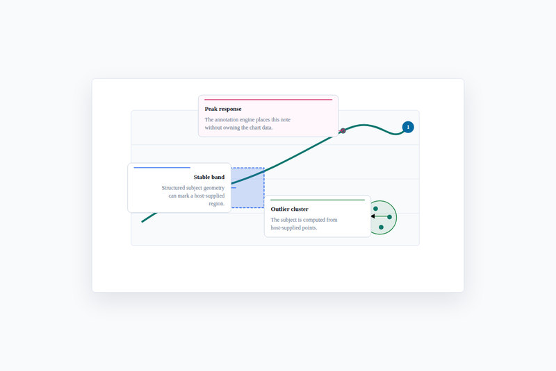
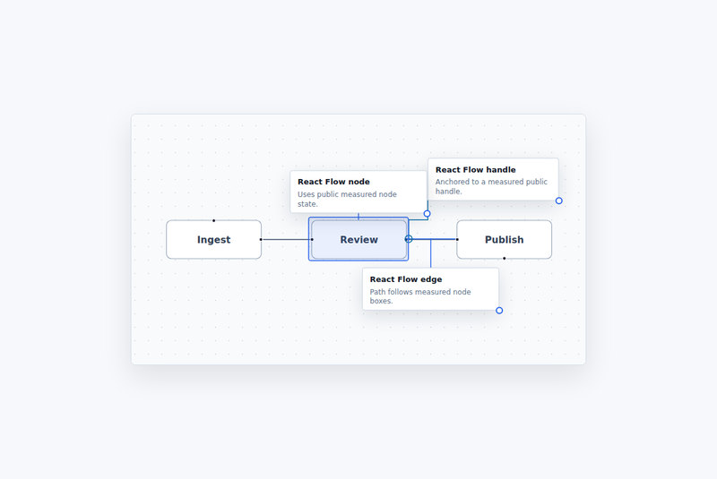
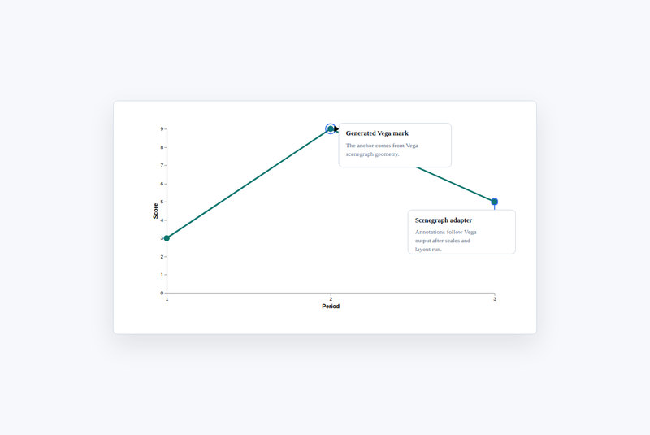
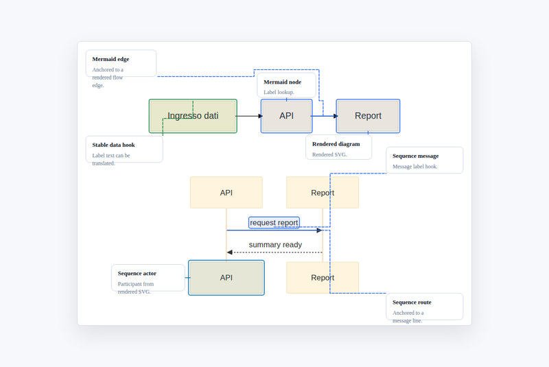

Anchor to reality.
Points, boxes, DOM ranges, chart marks and diagram edges become anchors for shared annotation data.
OPEN SOURCE / HEADLESS TYPESCRIPT
Annotations that know where to go. Attach notes to actual chart marks, diagram nodes, DOM regions and reports—without giving up control of rendering or application state.
DOM-free core · Collision-aware layout · Optional adapters
01 / INTERACTIVE
This is the actual annotation layout engine—not a prerecorded animation. Change the conditions and watch it recalculate.
02 / THE BOUNDARY
Bring geometry from the thing you already render. Receive deterministic placements, paths and a scored quality report.
Points, boxes, DOM ranges, chart marks and diagram edges become anchors for shared annotation data.
Explore candidate placements, avoid known obstacles, and route connectors around crowded regions.
Output SVG, use React components or draw the geometry yourself. Application state remains yours.
03 / REAL EXAMPLES
Every example runs real repository code. Open the demo, examine the source, and bring the same patterns to your host.

SVG / HEADLESS

REACT FLOW

VEGA / VEGA-LITE

MERMAID
04 / GET STARTED
Use the headless core, pass host coordinates, and choose a renderer. Optional adapters stay opt-in.
npm install @ponchia/annotations
Start with an existing SVG or a measured DOM box. The same model supports every optional adapter.
import {
resolveAnnotationLayout,
renderAnnotationsSvg
} from '@ponchia/annotations';
const layout = resolveAnnotationLayout({
annotations: [{
id: 'peak',
anchor: {
type: 'point',
point: { x: 280, y: 90 }
},
note: { title: 'Peak response' },
placement: { side: 'right' }
}],
bounds: { x: 0, y: 0, width: 640, height: 360 }
});
const svg = renderAnnotationsSvg(layout, {
title: 'Chart notes'
});